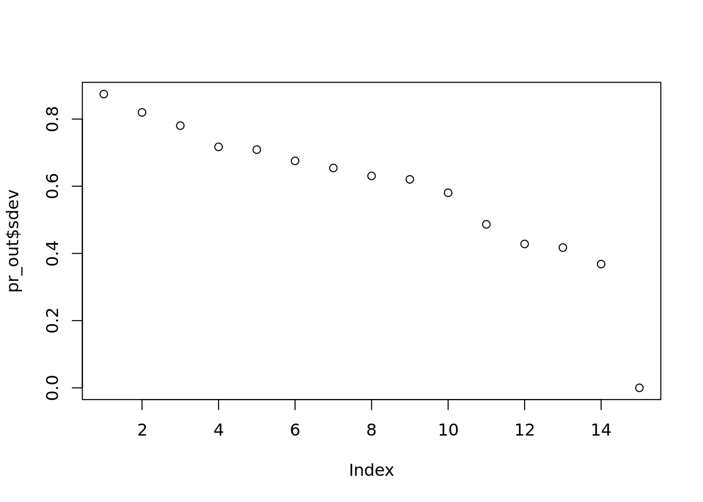

Chapter 4 Classification
4.1 Music dataset
From the CORGIS data project I’ve obtained a music dataset.
music <- read.csv("Datasets/music_hottest_song_only.csv")
y <- as.numeric(music$artist.terms == "hip hop")
x <- music$song.hotttnesss4.2 Logistic Regression Review
\(Y \sim Binomial(n=1, p(X))\)
\(p(X) = \frac{exp(X\beta)}{\exp(X\beta) + 1}\)
logit <- function(x){exp(x) / (1 + exp(x))}
logistic_obj <- function(params, X, y){
xbeta <- cbind(1, X) %*% params
p <- logit(xbeta)
return(-sum(dbinom(y, size=1, prob=p, log=TRUE)))
}
optim(c(1, 1), logistic_obj, X=x, y=y)## $par
## [1] -3.2070659 0.2257483
##
## $value
## [1] 721.6383
##
## $counts
## function gradient
## 63 NA
##
## $convergence
## [1] 0
##
## $message
## NULL#Wayne created in class
my_model <- glm(y ~ x,
family = binomial(logit))
summary(my_model)##
## Call:
## glm(formula = y ~ x, family = binomial(logit))
##
## Deviance Residuals:
## Min 1Q Median 3Q Max
## -0.3151 -0.2971 -0.2883 -0.2520 2.6326
##
## Coefficients:
## Estimate Std. Error z value Pr(>|z|)
## (Intercept) -3.20585 0.07808 -41.059 <2e-16 ***
## x 0.22775 0.12107 1.881 0.0599 .
## ---
## Signif. codes: 0 '***' 0.001 '**' 0.01 '*' 0.05 '.' 0.1 ' ' 1
##
## (Dispersion parameter for binomial family taken to be 1)
##
## Null deviance: 1446.9 on 4411 degrees of freedom
## Residual deviance: 1443.3 on 4410 degrees of freedom
## AIC: 1447.3
##
## Number of Fisher Scoring iterations: 6How to run logistic regression in R?
train <- sample(c(TRUE, FALSE), nrow(music), replace = TRUE)
mod <- glm(y ~ x, family = binomial(link = "logit"),
subset = train)
#To use the model, we pass it to the predict function. We pass in the new data
#We pass in the compliment of the subset we used (train = !test)
#We also pass in response.
#What is the probability that you think they are a 1 vs a 0
test_probs <-
predict(mod, newdata = data.frame(x = x[!train]), type = "response")
class(test_probs)## [1] "numeric"#This should feel absolutely like it is 0 and not one
hist(test_probs)#Round the numbers
test_pred <- test_probs > 0.5
#Head the numbers
head(test_pred)## 1 2 3 4 5 6
## FALSE FALSE FALSE FALSE FALSE FALSE#How good is my prediction
#First, how many predications did we get correct
same_as_data <- as.numeric(test_pred) == y[!train]
mean(same_as_data)## [1] 0.9622054#About 96 percent. Seems really good.Then we ask is the data unbalanced if you do you this for cancer in the general population for example. Could be bad if you have 96 percent accuracy
We call this a classification error. The histogram should be a red flag. We are saying everything is 0, and then are just wrong when its 1. Iin this case, every song is not hip hop, and we are right 96% of the time.
| Y = 1 | Y = 0 | |
|---|---|---|
| \(\hat{Y}\) = 1 | A | B |
| \(\hat{Y}\) = 0 | C | D |
\(\frac{A}{A + C}\) our recall! Of all the records that are “1”, how many are our model capturing
\(\frac{B}{B + D}\) our precision! Of all the records that are “1”, how many are our model capturing
The amazing thing is that we can actually make one of these one!
alpha <- 0.5
test_pred <- test_probs > alpha
truly1 <- y[!train] ==1
called1 <- as.numeric(test_pred)
recall <- sum(called1 & truly1)/ sum(truly1)
precision <- sum(truly1 & called1)/ sum(called1)
recall## [1] 0precision## [1] NaNRight now the recall is really bad: but lets make everything one and make our recall really good!
alpha <- 0
test_pred <- test_probs > alpha
truly1 <- y[!train] ==1
called1 <- as.numeric(test_pred)
recall <- sum(called1 & truly1)/ sum(truly1)
precision <- sum(truly1 & called1)/ sum(called1)
recall## [1] 1precision## [1] 0.03779458Now lets make a sequence!
alphas <- seq(0,1, length.out = 10000)
recalls <- rep(NA, length(alphas))
precisions <- rep(NA, length(alphas))
for(i in seq_along(alphas)){
alpha <- alphas[i]
test_pred <- test_probs > alpha
truly1 <- y[!train] ==1
called1 <- as.numeric(test_pred)
recall <- sum(called1 & truly1)/ sum(truly1)
precision <- sum(truly1 & called1)/ sum(called1)
recall[i] <- recall
precision[i] <- precision
}
#plot(recalls, precisions)What are the most popular “artist.terms” in the dataset?
artists_sorted <- sort(table(music$artist.terms), decreasing =T)
artists_sorted[1]## hip hop
## 171- Choose one “artist.terms” to predict for, then try running logistic regression vs usual lm() on all of the other variables, do they pick up different variables? What would your next steps be?
logit <- function(x){exp(x) / (1 + exp(x))}
logistic_obj <- function(params, X, y){
xbeta <- cbind(1, X) %*% params
p <- logit(xbeta)
return(-sum(dbinom(y, size=1, prob=p, log=TRUE)))
}
optim(c(1, 1), logistic_obj, X=x, y=y)## $par
## [1] -3.2070659 0.2257483
##
## $value
## [1] 721.6383
##
## $counts
## function gradient
## 63 NA
##
## $convergence
## [1] 0
##
## $message
## NULLImagine you’re doing fake news prediction, what metric(s) would you care more about the most? How would you recommend a target for these metrics for a company like Facebook?
artist_cols <-
grepl("^artist", names(music))
my_mod <-
glm(y ~ ., data = music[,!artist_cols])
ols <-
lm(y ~ ., music[,!artist_cols])We can plot this data and see the relationship!
plot(summary(ols)$coefficients[, 4], summary(my_mod)$coefficients[, 4])
If we plot the coefficients, of logistic versus regression, against each other, you will get a very very strong relationship. Things that are significant in one will be significant in the other.
If you only care about what features are important, there is very little difference between logistic and regression. Ultimately, when we are looking at the optimization, there is an xbeta term we created. It is just like in regression. Then you penalize by some magical calculation but eitherway it is all dependent on the xbeta term. In a sense, they are the same category of models.
4.3 Resampling
Often with inbalanced data sets you want to upsample (or downsample). You can create or get rid of data to make the sample more proportionate.
Alternatively you can Bootstrap the data. It is like asking what is the distribution of something we don’t know. We can use simulation to get a sense of what the distribution is (often used for uncertainty).
However, we always need to avoid overfitting. It is important to also do cross-validation then.
4.3.1 Up-sampling

Up-sampling
It works, but it is important to remember you aren’t creating new data. You are essentially adding more weight to the already existing data. But it does help.
4.3.2 Bootstrapping
If the data changes, how much will my model change? You have these questions about slightly different sets. So you create a similar bootstrap sample and do the same model on both. Then you look at the results. By collapsing across the samples (and doing more), you can see how sensitive the data is and how it changes with different inputs.

Bootstrapping
4.3.3 Cross Validation
When you generalize beyond the data set you have, how bad is your error? This is the problem of overfitting. You can’t generalize. Cross validation tries to tell you how bad of a problem you have. If you use tuning hyperparameters however, you can help fix this. You can leave part of the original set out to test on later. You switch the training set and validation set for all of the test.
In general, when tuning for hyperparameters (like degrees of polynomials) you ahve to make a choice. For example earlier with polynomials we graphed it using validation and training. Once we pick the optimal hyperparameter from the training set tested on the validation set. Then we apply it onto the test set to get the generalization error.
In short: - Cross validation between train/validation creates the hyperparameter. (i.e. degrees of polynomial) - Then you use all the training and validation data to get the parameters. (coefficients given the polynomial) - Then predict on the test data to get the generalization error.
This should prevent the overfitting from the hyperparameter. If you reapply onto a test set that wasn’t used to help you pick this should tell you if there is a problem.
There is some debate on double cross validation. You can then change the test set and revalidate. Some people argue why not? Our model should be more robust if we cycle through everything.
Reasons not to: Computational. It is resource intesnive. You can also leak data and ruin you generalization error.
4.4 Initial Work
df <- read.csv("Datasets/small_non_retweets_dc_inaug_steal.csv")
head(df,2)## X created_at
## 1 36998 2021-01-20T17:19:45.000Z
## 2 38336 2021-01-21T13:43:51.000Z
## text
## 1 View of White House and Washington Monument #DC #WashingtonDC https://t.co/YxGxgocXsT
## 2 Fue un momento emotivo para @joebiden y su esposa antes de entrar a la residencia.\n\n@latinostimemagazine \n\n#InaugurationDay #Inauguration #president #usa #residenciapresidencial #washingtondc #latinostimemagazine https://t.co/fbqi7Mx1Md
## retweet_count reply_count like_count dc_flag inaug_flag steal_flag
## 1 0 0 1 True False False
## 2 0 0 0 True True False
## washington.dc biden sentomcotton white.house joebiden hillary amykremer
## 1 0 0 0 0.9123 0 0 0
## 2 0 0 0 0.0000 1 0 0
## realdonaldtrump trump peter.navarro fox.news biden.inauguration harris
## 1 0 0 0 0 0 0
## 2 0 0 0 0 0 0
## charles.curtis joe.biden kamala.harris jack senschumer sentedcruz
## 1 0 0 0 0 0 0
## 2 0 0 0 0 0 0
## whitehouse inauguration.day america rudygiuliani kloeffler perduesenate
## 1 0 0 0 0 0 0
## 2 0 0 0 0 0 0
## gasecofstate beschlossdc facebook twitter youtube d.c. patriots obama
## 1 0 0 0 0 0 0 0 0
## 2 0 0 0 0 0 0 0 0
## gop capitol joe ali speakerpelosi trumps ap u.s..capitol donald.trump
## 1 0 0 0 0 0 0 0 0 0
## 2 0 0 0 0 0 0 0 0 0
## scotland tedcruz washingtonpost oann pence senate president.trump god
## 1 0 0 0 0 0 0 0 0
## 2 0 0 0 0 0 0 0 0
## usatoday dnc democrats president.biden dc potus msnbc nbcnews thehill
## 1 0 0 0 0 0 0 0 0 0
## 2 0 0 0 0 0 0 0 0 0
## pelosi codemonkeyz jaketapper republicans china newsmax usa florida djt
## 1 0 0 0 0 0 0 0 0 0
## 2 0 0 0 0 0 0 0 0 0
## nancy.pelosi jesus secret.service rsbnetwork lindseygrahamsc azgop
## 1 0 0 0 0 0 0
## 2 0 0 0 0 0 0
## secpompeo republican cnn gatewaypundit yahoo vice.president americans
## 1 0 0 0 0 0 0 0
## 2 0 0 0 0 0 0 0
## llinwood briankempga jackposobiec foxnews texas realmattcouch
## 1 0 0 0 0 0 0
## 2 0 0 0 0 0 0
## seanhannity ingrahamangle congress ossoff mayorbowser
## 1 0 0 0 0 0
## 2 0 0 0 0 0
## united.states.of.america kamala jimmy.carter covid u.s. cbsnews vp
## 1 0 0 0 0 0 0 0
## 2 0 0 0 0 0 0 0
## randpaul gopleader tuckercarlson senronjohnson donald senatemajldr
## 1 0 0 0 0 0 0
## 2 0 0 0 0 0 0
## kamalaharris iraq us kayleighmcenany pentagon republican.party
## 1 0 0 0 0 0 0
## 2 0 0 0 0 0 0
## tomfitton mtgreenee dems thedemocrats georgia housegop senategop
## 1 0 0 0 0 0 0 0
## 2 0 0 0 0 0 0 0
## senatorromney fbi iran barackobama jim_jordan ivanka donwinslow
## 1 0 0 0 0 0 0 0
## 2 0 0 0 0 0 0 0
## sethabramson airbnb abc google senkamalaharris united.states washington
## 1 0 0 0 0 0 0 0
## 2 0 0 0 0 0 0 0
## president.donald.trump hawleymo richardgrenell gopchairwoman
## 1 0 0 0 0
## 2 0 0 0 0
## projectlincoln flotus nytimes parlertakes marcorubio sendavidperdue
## 1 0 0 0 0 0 0
## 2 0 0 0 0 0 0
## senatorloeffler jennaellisesq garepublicans drbiden donaldjtrumpjr
## 1 0 0 0 0 0
## 2 0 0 0 0 0
## repmattgaetz tomilahren johncornyn mariabartiromo chuckgrassley aoc
## 1 0 0 0 0 0 0
## 2 0 0 0 0 0 0
## catturd2 sexcounseling danscavino sidneypowell1 mike_pence sebgorka
## 1 0 0 0 0 0 0
## 2 0 0 0 0 0 0
## senrickscott repkinzinger democrat epochtimes ivankatrump nypost
## 1 0 0 0 0 0 0
## 2 0 0 0 0 0 0
## breitbartnews lisamurkowski sentoomey cnnbrk cia cbs nbc sensanders
## 1 0 0 0 0 0 0 0 0
## 2 0 0 0 0 0 0 0 0
## genflynn mcconnell blm erictrump amyklobuchar berniesanders lord
## 1 0 0 0 0 0 0 0
## 2 0 0 0 0 0 0 0
## cnnpolitics russia laurenboebert senatedems wusa9 hbwx tenacioustopper
## 1 0 0 0 0 0 0 0
## 2 0 0 0 0 0 0 0
## miriweather washington.d.c. アメリカ washingtondc dctogogo canada
## 1 0 0 0 0 0 0
## 2 0 0 0 0 0 0
## reuters antifa virginia statedept wsj npr bbcworld
## 1 0 0 0 0 0 0 0
## 2 0 0 0 0 0 0 0
## the.rhythm.and.blues.presidential.inaugural.ball randbreloaded
## 1 0 0
## 2 0 0
## mike.pence dcpolicedept us.capitol maryland thejusticedept election.day
## 1 0 0 0 0 0 0
## 2 0 0 0 0 0 0
## india national.guard president acosta bideninaugural transition46
## 1 0 0 0 0 0 0
## 2 0 0 0 0 0 0
## politico narendramodi hillaryclinton estados.unidos amazon
## 1 0 0 0 0 0
## 2 0 0 0 0 0
## secretservice george.w..bush andrewfeinberg dhsgov michelleobama bernie
## 1 0 0 0 0 0 0
## 2 0 0 0 0 0 0
## dmvblacklives fbiwfo nationalguard guardia.nacional capitol.hill
## 1 0 0 0 0 0
## 2 0 0 0 0 0
## national.mall capitol.police bernie.sanders presssec nbc.news
## 1 0 0 0 0 0
## 2 0 0 0 0 0
## disclosetv u.s.capitol.building afghanistan browns steven.m..d.antuono
## 1 0 0 0 0 0
## 2 0 0 0 0 0
## wapo marvel lady.gaga ustreasury jrpsaki リンカーン大統領.新聞社300社
## 1 0 0 0 0 0 0
## 2 0 0 0 0 0 0
## 選挙クーデター hotnews8net amanda.gorman theamandagorman
## 1 0 0 0 0
## 2 0 0 0 0Let’s understand the flags, like steal_flag.
df$steal_flag <- as.numeric(df$steal_flag == "True")
mean(df$steal_flag)## [1] 0.01701149We are turning true or false into 0 or 1. This flag is rare. It is about 1.7 percent.
Steal means if the word “steal” was present in a tweet. We can examine some of them for example by using:
head(df[df$steal_flag > 0, "text"], 4)## [1] @Rob_Noorollah @Christi76673318 Pick up a copy of Biden's new book... \n\n"The Art of the Steal"\n\n#StopTheSteaI2020
## [2] @SraBlockerFV @EFtours What would be great is if you ddn’t steal $1000 from my kids after you candled their tour! #StopTheSteaI2020 #TheMoreYouKnow #WakeUpSlowM
## [3] #SecretService is gonna get you for revealing @realDonaldTrump's codename! \n\n#FightBack PATRIOTS \n#StopTheSteal \n#4MoreYears \n#Jan6GuestHouse \n#Jan6Rides \n#WashingtonDC https://t.co/P9NkJQ5KLI
## [4] Me, heading to Tampa to Stop Brady’s Steal. Saints won in a landslide. We need to take our NFL back! #StopTheSteaI2020 https://t.co/OTL8nADgAY
## 4279 Levels: ¿Qué hacía ayer @realDonaldTrump mientras tomaban el Capitolio en #WashingtonDC? \n\nEn las imágenes se aprecia a Trump y su hija @IvankaTrump observando diversas pantallas que mostraban que lo ocurría en Washington DC, mientras en el fondo se escucha la canción 'Gloria'. https://t.co/i3Cyhc0mTF ...4.5 A basic model with upsampling
We can create a new data object that stores only the indices of the places where steal_flag exists.
pos_ind <- which(df$steal_flag > 0)
head(pos_ind)## [1] 28 91 114 171 176 285So in this case, tweets 28, 91, 114… etc have the word steal.
Let’s sample the indices now. This requires us to figure out what we want to upsample our data to. To do so we will make N 10 times the length of our current amount of steal_flags. What we are doing is artificially increasing our data set. Upsampling is somewhat of a hack in the sense. It makes the objective function give more weight to the positive yet rare cases in our data. It is sorta dirty but also helpful, especially for preliminary exploration. There are other ways to be better at weighing certain aspects.
Note: you can also downsample the data. However, this is much more rare. It should have a very similar affect but usually you don’t want to throw data away!
N <- length(pos_ind)*10
sample_ind <- sample(pos_ind, N, replace = TRUE)table(sample_ind)## sample_ind
## 28 91 114 171 176 285 311 364 429 509 636 719 789 821
## 9 11 15 13 11 14 8 12 7 5 11 5 9 8
## 835 951 1063 1120 1339 1346 1401 1523 1561 1580 1607 1826 1854 1963
## 13 12 15 10 11 6 5 7 5 9 10 11 7 10
## 2050 2063 2082 2193 2244 2326 2453 2465 2578 2701 2702 2853 2927 2949
## 8 16 14 6 11 8 5 14 12 8 8 11 7 9
## 3084 3147 3198 3281 3297 3311 3387 3424 3537 3543 3554 3574 3577 3615
## 8 10 8 8 11 14 13 11 12 7 3 11 13 15
## 3678 3686 3699 3723 3740 3755 3791 3868 3894 3923 3946 3955 3984 4032
## 11 13 9 14 8 11 15 9 10 10 10 14 7 10
## 4076 4125 4136 4262
## 7 12 12 8This table shows the number of times we get each entry. The above number is the specific record and below it is the number of times.
So let’s create a new dataframe. We want to grab the particular indices from the above dataframe multiple times. Something like this seems intuitive.
new_df <- df[sample_ind,]However there is a major problem!
dim(new_df)## [1] 740 259dim(df)## [1] 4350 259We lost a lot of cases! In fact, we threw away all of the negative cases. So instead, we need to stack the dataframes together.
new_df <- rbind(df[sample_ind, ], df)
dim(new_df)## [1] 5090 259Note the features themselves haven’t changed at all. Instead, the proportion of the features have changed. There we go. Also note we did not overwrite df, we created a new dataframe. This is good practice in functional programming. Now we can do things like linear regression!
ols <- lm(steal_flag ~ trump + capitol.police, data = new_df)
summary(ols)##
## Call:
## lm(formula = steal_flag ~ trump + capitol.police, data = new_df)
##
## Residuals:
## Min 1Q Median 3Q Max
## -0.1672 -0.1672 -0.1672 -0.1141 0.8862
##
## Coefficients:
## Estimate Std. Error t value Pr(>|t|)
## (Intercept) 0.167170 0.005525 30.259 < 2e-16 ***
## trump -0.053420 0.015169 -3.522 0.000433 ***
## capitol.police -0.305764 0.493761 -0.619 0.535777
## ---
## Signif. codes: 0 '***' 0.001 '**' 0.01 '*' 0.05 '.' 0.1 ' ' 1
##
## Residual standard error: 0.3662 on 5087 degrees of freedom
## Multiple R-squared: 0.002501, Adjusted R-squared: 0.002109
## F-statistic: 6.377 on 2 and 5087 DF, p-value: 0.001714Regressing with trump and capitol police, it appears capitol police isn’t significant but trump is. That is his slogan so it shouldn’t be too surprising but there it is.
How to mix upsample and also cross validate can only be done one way. You don’t want to upsample first! If you did that, you could end up with the same record in both the train and test. Then you would be too confident in those cases.